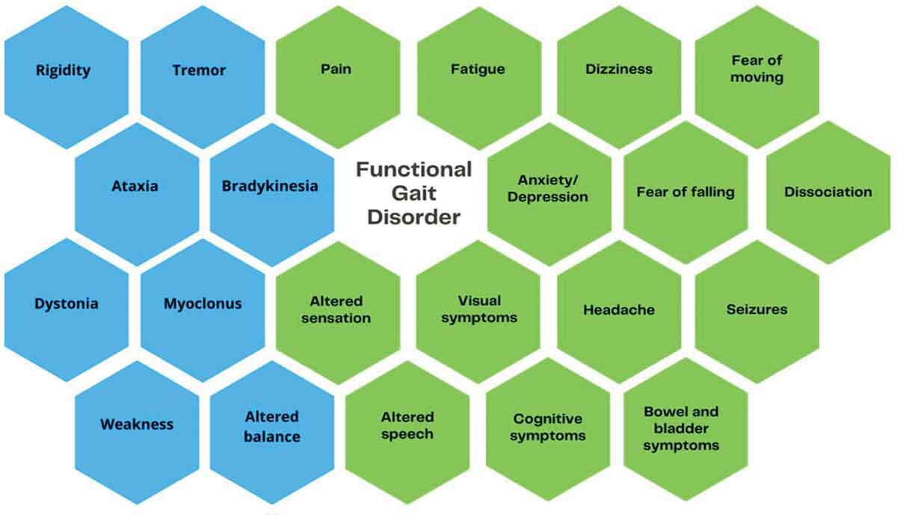

Diagnostik & Symptome
Positive klinische Zeichen
| Hoover Zeichen | |||
| test11 | test12 | ||
| Link 5 | test13 | test14 | test15 |
| Link 6 | test16 | test17 | test18 |
| Link 6 | test19 | test20 | test21 |
mFND
seizureFND
Symptome


Das Hoover-Zeichen ist ein diagnostischer Test zur Unterscheidung zwischen einer Schwäche etwa durch eine Querschnittslähmung und funktioneller Schwäche der Beine. Es basiert auf der physiologischen Reaktion, dass bei der Anhebung eines Beins das andere Bein automatisch nach unten drückt. Dies wird durch den gekreuzten Streckreflex (crossed extensor reflex) ermöglicht, bei dem die Kontraktion der Muskeln eines Beins die antagonistische Kontraktion im anderen Bein auslöst.
Test der Hüftbeugung (med.: flexion):
Anweisung: Der Pat. wird gebeten, das Schwache Bein anzuheben
Beobachtung: Während der Patient versucht, das rechte Bein anzuheben, legt der
Arzt
seine Hand unter die Ferse des linken Beins. Der Arzt beobachtet, ob das linke Bein
automatisch nach unten drückt.
Ergebnis: Normale Funktion oder organische Hemiparese: Wenn das linke Bein
automatisch
nach unten drückt, spürt der Arzt den Druck auf seiner Hand. Dies zeigt, dass die
Muskeln
normal funktionieren oder dass eine organische Hemiparese vorliegt. Funktionelle
Schwäche:
Wenn kein Druck zu spüren ist, deutet dies auf eine funktionelle Schwäche hin.
Test der Hüftstreckung (med.: extension):
Anweisung: Der Pat. wird gebe, dass gesunde/bessere Bein gegen Widerstand zu
beugen.
Beobachtung: Während der Patient das linke Bein gegen Widerstand beugt, legt der
Arzt
seine Hand unter die Ferse des schwachen Beins. Der Arzt beobachtet, ob das schwache
Bein
automatisch nach unten drückt.
Ergebnis: Wenn der Arzt einen Druck auf seiner Hand spürt, der vorher nicht da
war,
deutet dies auf eine inkonsequente Muskelaktivität hin, was auf eine funktionelle
Schwäche
hindeutet. Fehlt dieser Druck, könnte dies auf eine anderweitige Schwäche hindeuten
(z.B.
Querschnittslähmung)
"The great beauty of Hoover's sign is that it relies on the absence of a normal
phenomenon
found in most people and not the presence of an abnormal phenomenon such as the Babinski
sign."
(Das Schöne am Hoover-Zeichen ist, dass es auf dem Fehlen eines normalen Phänomens
beruht, das bei den meisten Menschen auftritt, und nicht auf dem Vorhandensein eines
anormalen Phänomens wie beim Babinski-Zeichen.)
Was ist eine Dystonie?
Funktionelle Dystonie (FD) ist eine Bewegungsstörung, bei der es zu unkontrollierten
Muskelkontraktionen kommt, die zu verdrehten Bewegungen und abnormen Körperhaltungen führen, oft
begleitet von Schmerzen

Geschlecht, Alter und Häufigkeit:
FD ist bei Frauen häufiger als bei Männern. Das
durchschnittliche Erkrankungsalter ist zwischen 29 und 50 Jahren. Kinder sind deutlich weniger
betroffen (2-5/100.000; bei Kindern aber auch deutlich weniger Studien). Hier liegt das
durchschnittliche Erkrankungsalter bei 11-14 Jahren.
Organische Dystonie (OD) versus Funktionelle Dystonie (FD):
| Organische Dystonie | Funktionelle Dystonie | |
| Ursache | Meist durch genetische oder neurologische Probleme. | Keine erkennbare körperliche Ursache. Softwear statt Hardwear Problem |
| Symptome | Entwickeln sich langsam und sind konstant. | Treten plötzlich auf und können stark variieren. |
| Behandlung | Medikamente und Physiotherapie helfen oft. | Fokus auf Physiotherapie, psychologische Unterstützung und Techniken zur Stressbewältigung. |
Biopsychosoziales Modell (übertragbar auf FMD allgemein):
| Biologisch | Psychisch | Psychosozial | |
| Prädisposition |
|
|
|
| Auslösend |
|
|
|
| Erhaltend |
|
|
|
Wie äußert sich die FGD (functional gait disorder)?
Es gibt viele verschiedene Möglichkeiten, wie sich FGD äußern kann, sogenannte "Phänotypen". Diese
können alleine auftreten, häufig sind jedoch mehrere Phänotypen kombiniert. Ebenfalls treten bei FGD
häufig auch andere funktionelle (non-motor) und funktionell-motorische Symptome auf.

Die am häufigsten genannten nicht motorischen Symptome sind Angststörungen (52,1%), Fatigue (45,1%)
und Schmerzen (41,9%).
Aber auch eine Komorbidität einer anderen neurologischen Erkrankung ist
möglich (11,9%).
| Phänotyp | Beschreibung |
| slow gait (Langsamer Gang) | Langsame Gangart. Verlangsamte Geschwindigkeit jedes Schrittes und möglicherweise gleichzeitige Innervation von Antagonistenmuskeln sowie Abduktion der Arme. |
| astasia-abasia (Astasie-Abasie) | Astasie-Abasie beschreibt die Unfähigkeit, aufrecht zu stehen (Astasie) und die Unfähigkeit, koordiniert zu gehen (Abasie) |
| knee buckling (Knieschwäche) | Intermittierendes plötzliches Einknicken der Knie, verbunden mit dem Abstützen oder Aktivieren der Antischwerkraftmuskeln, bevor der Boden berührt wird. |
| Psychogenic Rhomberg (Psychogener Romberg) | Patienten können zum Tester hin oder von ihm wegfallen. Große Körperschwankungen, die nach einigen Sekunden beginnen. Das Gleichgewicht verbessert sich, wenn die Patienten abgelenkt sind. |
| Uneconomic postures (Unekonomische Haltungen) | Hoher Energieaufwand der Muskeln, um schwierige Haltungen mit exzentrischer Verlagerung des Schwerpunkts oder gebeugten Knien und Hüften aufrechtzuerhalten. |
| Walking on ice (Gehen auf Eis) | Vorsichtige, breitbasige Schritte mit verkürzter Schrittlänge, Steifheit in Knien und Knöcheln sowie Schlurfen der Füße. |
| Dragging of one foot (Schleifen eines Fußes) | Monoplegischer Gang mit normaler Schwungphase auf der nicht betroffenen Seite. Der Vorfuß des nachziehenden Beins bleibt oft in allen Phasen des Gangzyklus in Kontakt mit dem Boden. Das Bein und/oder der Fuß ist häufig nach außen oder innen rotiert, mit deutlicher kompensatorischer Anstrengung, das Bein während der Schwungphase nach vorne zu bewegen, wobei Hüfte und/oder Knie gestreckt sind |
| Truncal imbalance (Rumpf-Ungleichgewicht) | Instabilität des Rumpfes im Stand und Gang, mit seitlichem Schwanken und Schwingen der Arme. Schritte erfolgen oft zur Korrektur des Gleichgewichts. |
| Functional Dystonic gait (Funktionelle Dystonie-Gang) | Abnorme Haltung des Beins oder Rumpfes während des Gangzyklus. Eine feste Plantarflexion und Inversionshaltung des Fußes wird oft beobachtet. Inkonsistenzen können das Verschwinden der abnormalen Haltung in verschiedenen Positionen umfassen. |
| Functional Tremulous gait (Funktioneller Tremor-Gang) | Gangbild, das durch Tremor in Stand- oder Schwungphasen gekennzeichnet ist und die unteren Gliedmaßen oder den Rumpf betrifft. Der Tremor kann sich in verschiedenen Haltungen verändern. |
| Tightrope walking (Seiltänzer-Gang) | Übertriebenes Schwanken des Rumpfes bei gleichzeitiger Beibehaltung einer schmalen Basis, wobei die Beine scheinbar einem Seil folgen, Rumpfinstabilität mit guter Zielausrichtung auf nahegelegene Wände oder Möbel |
| Phänotyp | Beschreibung |
| Camptocormic (Camptocormie) | Abnorme Beugung des Rumpfes in stehender Position, die sich beim Gehen verschlimmert. |
| Sensory ataxic (Sensorische Ataxie) | Breitbasiger Gang, bei dem die Füße während der initialen Standphase ungeschickt nach unten fallen. Die Person neigt dazu, während des gesamten Gangzyklus auf ihre Füße zu schauen. |
| Choreoballistic (Choreoballismus) | Unwillkürliches Schleudern der Gliedmaßen oder des Rumpfes, was zu starkem, unkontrollierbarem Schlagen führt |
| Stiff-man syndrome/robotic (Stiff-Man-Syndrom/Roboter-Gang) | Unwillkürliche Aktivierung axialer Agonisten- und Antagonistenmuskeln, die die posturale Kontrolle beeinträchtigt. |
| Ataxic gait (Ataktischer Gang) | Variability in base of support or inability to walk in a straight line, often with excessive arm movements |
| Spastic (scissoring) gait (Spastischer (scherenartiger) Gang) | Die Beine kreuzen die Mittellinie während der Schwungphase, obwohl bei Tests keine Adduktorenspastik und normale Beinreflexe vorliegen. Der Scherengang kann sich beim Rückwärtsgehen verbessern. |
| Trendelenburg (weak) gait (Trendelenburg (schwacher) Gang) | Inkonsistenter Watschelgang. |
| Parkinsonian gait (Parkinson-Gang) | Bradykinetischer Gang mit inkonsistentem und ablenkbarem Einfrieren, Tremor und Rigidität. |
| Hemiparetic gait (Hemiparetischer Gang) | Ziehen eines Beins durch die Schwungphase, Variabilität während des Gangs und keine Spastik bei Tests. Nachgebende Schwäche (give-away weakness) mit positivem Hoover-/Abduktor-Zeichen kann festgestellt werden. |
| Footdrop (Fußheberschwäche) | Dropping of the forefoot at initial swing or mid-swing |
Phänotypen
Neurologische Erkrankungen nachahmende Phänotypen
Diagnostik:
FGD sollte wenn möglich durch positive klinische Zeichnen diagnostiziert werden. Hier ist zum
Beispiel das Hoover Zeichen anwendbar. Ebenfalls kann die Diagnose durch Inkonsistenz und
Inkongruenz gestellt beziehungsweise gestützt werden.
Was sind Tics?
Tics sind definiert als plötzliche, schnelle, wiederkehrende Bewegungen oder Geräusche, die nicht
rhythmisch sind.
Wie äußern sich funktionelle Tics? Die Symptome an sich sind sehr ähnlich wie die von beispielsweise Tourette. Der größte Unterschied liegt im Erkrankungsalter. Tourette beginnt bereits in der frühen Kindheit, während funktionelle Tics meistens erst ab einem Alter von 10-11 Jahren. Manchmal treten sie auch im Erwachsenenalter das erste Mal auf.
- Links: wie sich funktionelle Tics äußern
- Mitte: welche Gemeinsamkeiten funktionelle Tics und Tourette haben
- Rechts: wie sich Tourette äußert
Anhand dieser Anzeichen kann zwischen funktionellen Tics und Tourette unterschieden werden.
Dadurch wird auch die Diagnose gestellt sowie eine Fehldianose vermieden.
Mögliche Komorbiditäten:
- Fatigue
- Angststörungen
- Depressionen
- PTBS
- chronische Nacken/Rückenschmerzen
- atypische Brustschmerzen
- Fibromyalgie
- funktionelle Dystonie
- funktioneller Tremor
- Reizdarmsyndrom
- CRPS (komplexes regionales Schmerzsyndrom)
- chronische Beckenschmerzen
- funktionelle Gliedmaßenschwäche
- sensorische Störungen
Sarah's Geschichte
Sarah ist 13 Jahre alt und interessiert sich für Tanz, Kunst und Schauspiel. In den letzten 4 Wochen hat sie plötzlich einsetzende, dauerhafte motorische Tics in ihren Armen und Beinen erlebt. Diese waren mit jaulenden Geräuschen und einigen Tierlauten sowie einer Tendenz zum Fluchen gegenüber ihrer jüngeren Schwester und scheinbar unkontrolliertem Ausrasten verbunden. Diese Erfahrung war für sie sehr belastend, und sie war mehrmals in der Notaufnahme, aber niemand schien zu wissen, was zu tun ist. Sie fühlte sich zu verlegen, um mit ihren Freunden darüber zu sprechen.Sarah hat einen jüngeren Bruder im Alter von 5 Jahren mit einer Diagnose aus dem Autismus-Spektrum. Sie beschreibt sich selbst als schüchtern und sozial ängstlich, und ihre Eltern sagen, sie sei eine „Perfektionistin“.
Die Tics haben dazu geführt, dass sie nicht zur Schule gehen konnte und viel Zeit allein in ihrem Schlafzimmer verbracht hat. Sie hat Zeit damit verbracht, soziale Medien zu durchstöbern und wegen ihrer Symptome nach Tourette-Seiten zu suchen. Kürzlich hatte sie den Mut, ein TikTok-Video über ihre Erfahrungen zu machen. Sie hat einen Onkel mit einigen Tics und Zwangsstörungen (OCD).
Rückblickend hatte Sarah im Alter von etwa 5 Jahren einige subtile Tics, aber alle dachten, sie hätten sich gelegt, und niemand hatte sie seit vielen Jahren bemerkt.
In Sarahs Fall hatten ihre Tics hauptsächlich Merkmale von funktionellen Tics. Sie betrafen insbesondere ihre Arme und ihren Körper. Sie konnte die Tics nicht unterdrücken, nicht einmal für ein paar Sekunden, und sie hatte nicht das übliche „Warnsignal“, das Menschen mit Tourette-Syndrom haben. Die Tatsache, dass sie plötzlich und heftig im Alter von 13 Jahren auftraten, war ebenfalls typisch für funktionelle Tics und nicht für das Tourette-Syndrom.
Sarahs Ärzte dachten, dass sie wahrscheinlich milde Tics als Kind hatte, die sie anfällig für die Entwicklung funktioneller Tics machten.
Während der Behandlung stellte sich heraus, dass einige Dinge in der Schule stressig waren, mit Gruppenzwang, und Sarah fühlte sich panisch wegen ihrer Schulaufgaben, obwohl sie eine ausgezeichnete Schülerin war.
Sarah hatte Psychotherapie, die ihr half, über ihre Gefühle zu sprechen und mit Gefühlen von Sorge und Panik umzugehen. Sie lernte auch Techniken, die ihr halfen, sich abzulenken, wenn die Tics stark waren, und allmählich verbesserten sich die Bewegungen, sodass sie wieder zur Schule gehen konnte. Sie hatte immer noch ab und zu einen Tic, aber das war beherrschbar.
*übersetzt Englisch --> Deutsch durch ChatGPT (Original)